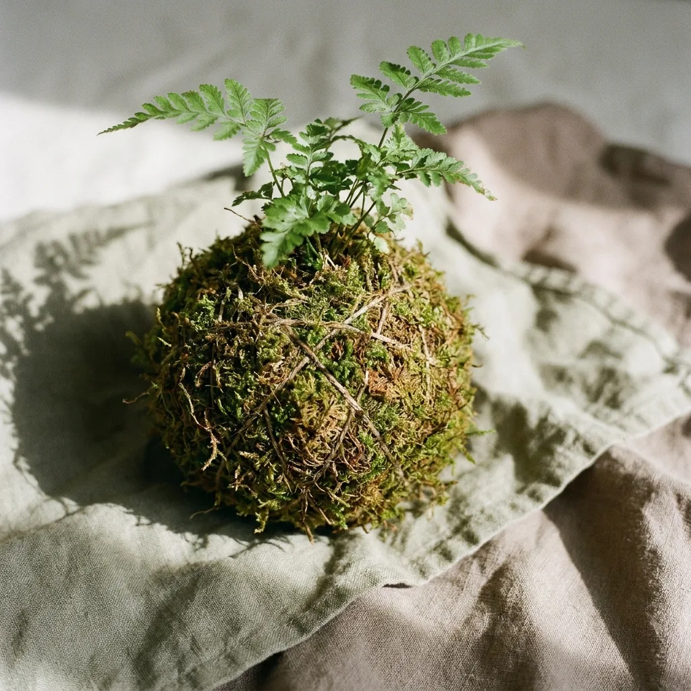
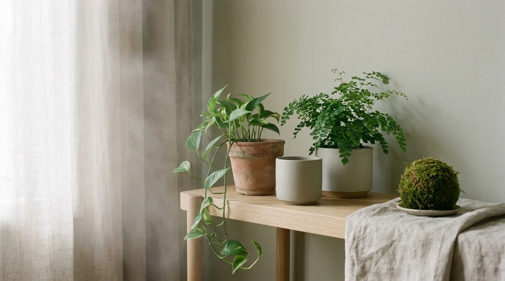
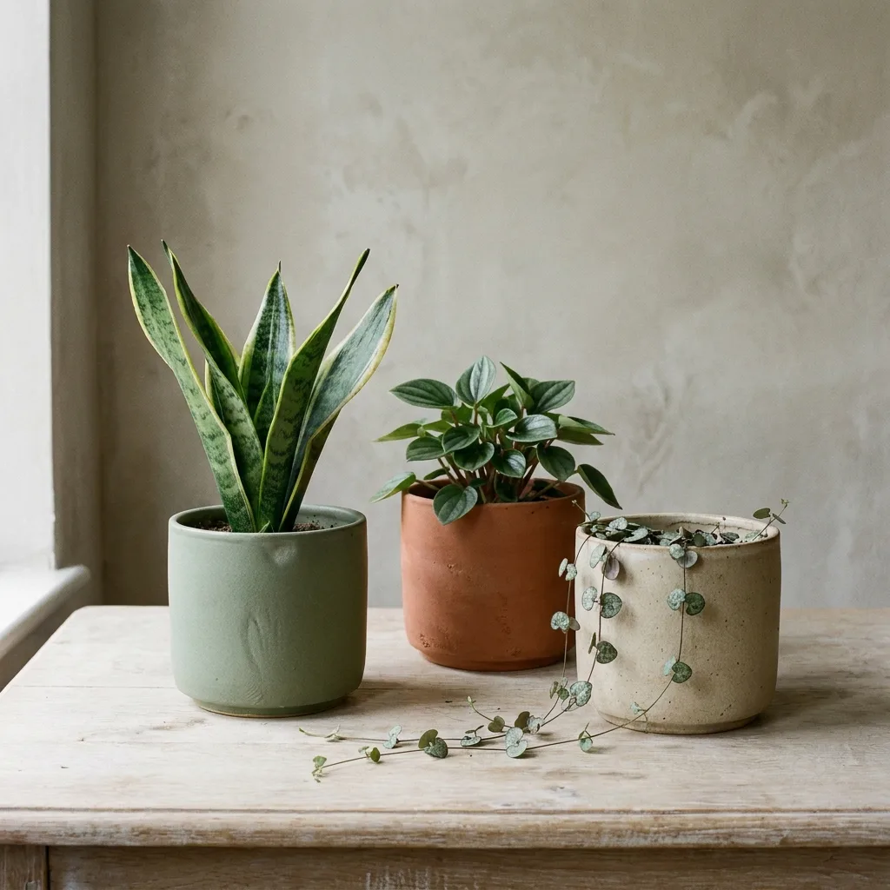
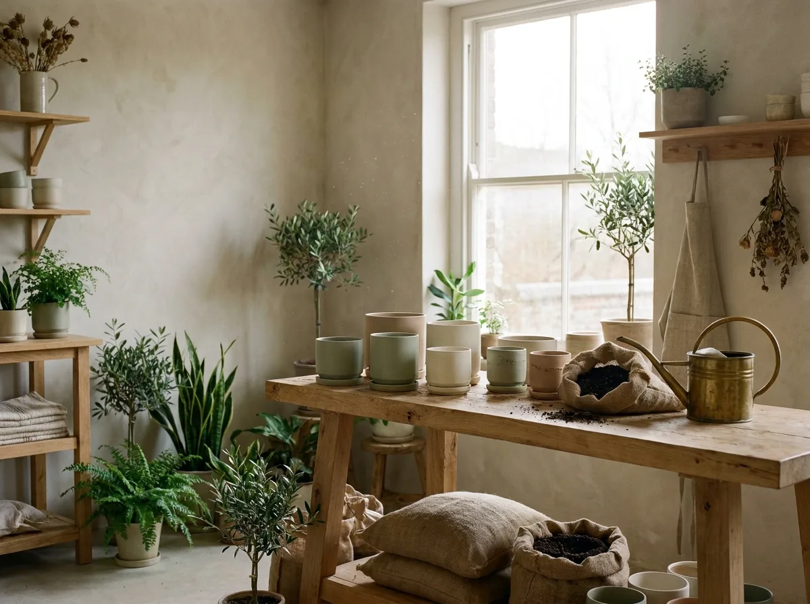

Kokedama
原生山苔・苔玉
以台灣山苔層層手作包覆,附原木托盤,綠意懸浮如一方小森林。
NT$880

苔間相信,一株植物的價值不在於完美無瑕,而在於它如何隨光陰與你一同呼吸、生長。我們從台灣本地苗圃與職人工坊,挑選能在室內安然生活的綠意,陪伴緩慢而真實的日常。
每一株都經過室內適應與光照測試,標註所需光線與澆水節奏,新手也能安心入門。
苔玉以山苔層層包覆,陶盆由台灣陶藝工坊手捏燒製,每件器物都帶著獨一無二的肌理。
購買後享有專屬養護指南與線上諮詢,植物若遇困境,我們陪你一起把它救回來。

以台灣山苔層層手作包覆,附原木托盤,綠意懸浮如一方小森林。

極耐陰、淨化空氣的入門首選,搭配霧面釉陶盆沉靜內斂。

圓潤小葉如綴串鈕扣,喜濕潤散光,為桌角添一抹輕盈綠。